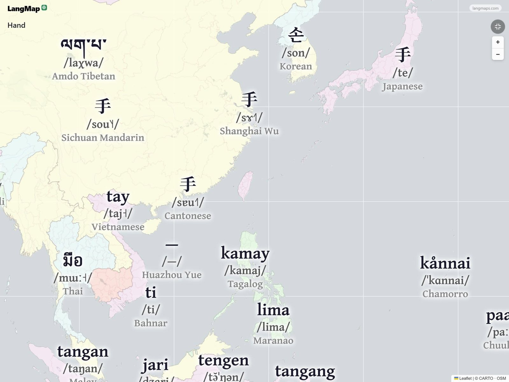

Sinosphere · · revised · Facebook post
English Words Do Not Always Stay English in Asia
- English words do not always stay English after they arrive in Asia.
- Japan has ハンドル for a steering wheel; Korea has 오피스텔, an office that is also a home.
- And sometimes expressions shaped in Asia travel back into international English.

Contents
A handle you steer with
Japanese drivers turn a ハンドル handoru.
But tell an English-speaking driver to "turn the handle" and they will probably wonder which handle you mean.
In English, a handle is normally something you grip:
a door handle
a knife handle
a suitcase handle
The round thing in a car is a steering wheel, or simply the wheel.
Japanese took English handle, "something held and operated by the hand," and extended it to steering controls.
And this usage is surprisingly old. Japanese was already using ハンドル for mechanical controls in the nineteenth century.
English does have another meaning of handle that may sound familiar to Japanese speakers.
"What's your handle?"
Here, handle means a nickname or online name. This is genuine American slang, recorded since the nineteenth century and later common in radio and internet culture.
Japanese even has a name for words like ハンドル: 和製英語 wasei-eigo, "English made in Japan." The pieces are English; the meaning was settled in Japan.
Korea: English pieces, Korean words
Korean developed its own English-looking vocabulary, often called Konglish.
오피스텔 opiseutel
office + hotel
An officetel is a specifically Korean type of building combining office and residential functions. The first ones appeared in Seoul in the 1980s.
Then there is:
핸드폰 haendeupon
hand + phone
It means "mobile phone."
This is normal Korean, although its exact place of origin is unclear.
Why "hand"?
The map at the top of this article shows the word for "hand" across the region. Every one of these languages already had its own:
Japanese: 手 (te)
Korean: 손 (son)
Vietnamese: tay
Cantonese and Wu: 手
So ハンドル and 핸드폰 were not filling an empty slot. Japanese and Korean speakers had perfectly good native words for "hand." The English hand came in only as part of a whole borrowed word, handle, or a new compound, hand + phone, and then went to work in ways English never used it.
That is the pattern behind both words: a borrowed English piece, put to work inside a new language with its own needs.
China: phrases that went the other way
China gives us a different kind of story.
Nineteenth-century Chinese Pidgin English produced expressions such as:
no can do
Chinese also gave English literal translations such as:
丟臉 / 丟面子
lose face
紙老虎
paper tiger
And possibly one of the most familiar phrases of all:
好久不見
long time no see
The exact origin of "long time no see" is debated, but Chinese Pidgin English and expressions such as 好久不見 are often suggested as one source.
Still travelling
And this process did not stop in the nineteenth or twentieth century.
Modern Chinese internet culture is still producing expressions that move into English.
內卷 nèijuǎn
involution
躺平 tǎngpíng
lying flat
"Lying flat" became internationally recognizable after the Chinese 躺平 movement appeared in 2021.
The English words are ordinary.
The meaning is Chinese.
Four ways a word can travel
So English in Asia is not simply a story of people borrowing English words.
Sometimes a borrowed word gets a new meaning.
Sometimes English pieces are assembled into a new local word.
Sometimes a local expression is translated almost word for word into English.
And sometimes that expression travels far beyond where it started.